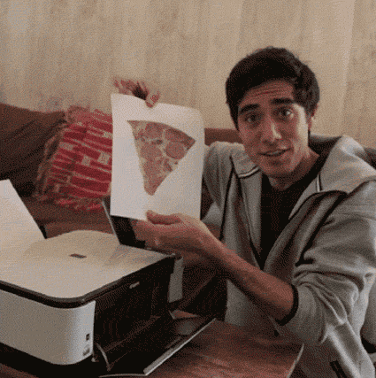

Что такое 3D-печать
 Технология 3D-печати была запатентована в 80-х годах прошлого века, но популярность обрела относительно недавно.
Были разработаны новые, перспективные методики и возможности 3D-технологий вышли на совершенно новый уровень.
Однако и по сей день методика известна не во всех кругах, и далеко не каждый в курсе, что такое 3D печать.
В сегодняшней статье мы постараемся подробно и доступно объяснить вам, что такое 3D-печать и где она применяется.
Технология 3D-печати была запатентована в 80-х годах прошлого века, но популярность обрела относительно недавно.
Были разработаны новые, перспективные методики и возможности 3D-технологий вышли на совершенно новый уровень.
Однако и по сей день методика известна не во всех кругах, и далеко не каждый в курсе, что такое 3D печать.
В сегодняшней статье мы постараемся подробно и доступно объяснить вам, что такое 3D-печать и где она применяется.
 Если коротко, 3D-печать – это методика изготовления объемных изделий на основе цифровых моделей. Независимо от конкретной технологии, суть процесса заключается в постепенном послойном воспроизведении объектов. В этом процессе применяется особое устройство – 3D-принтер, который печатает определенными видами материалов. Более подробно о нем написано здесь. Другие названия технологии – быстрое прототипирование или аддитивное производство. Часто словосочетание «аддитивные технологии» используется в значении «3D-технологии».
Про историю 3D-печати можно почитать здесь
А также ссылка на проект в сфере 3D-печати, в котором я учавствую → кликай